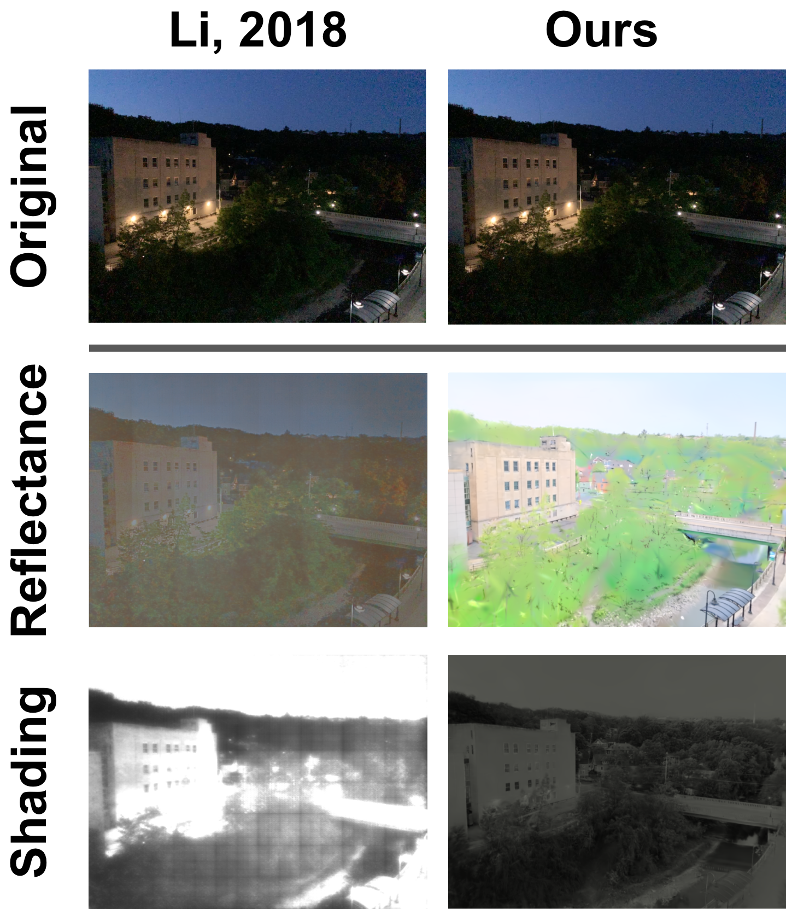
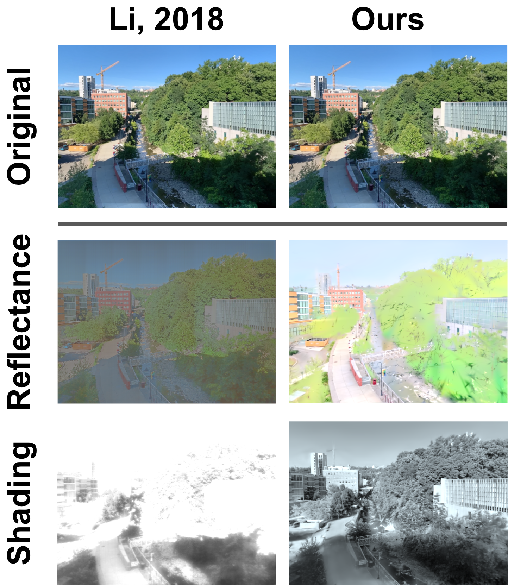
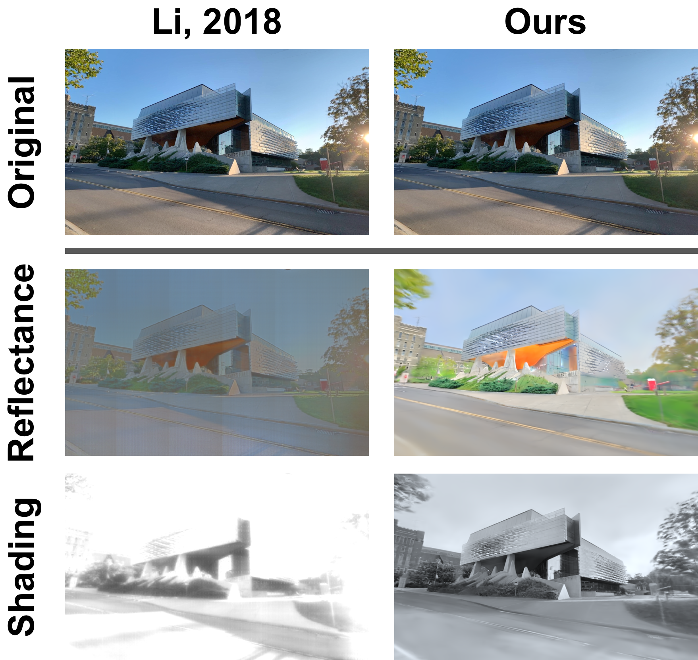
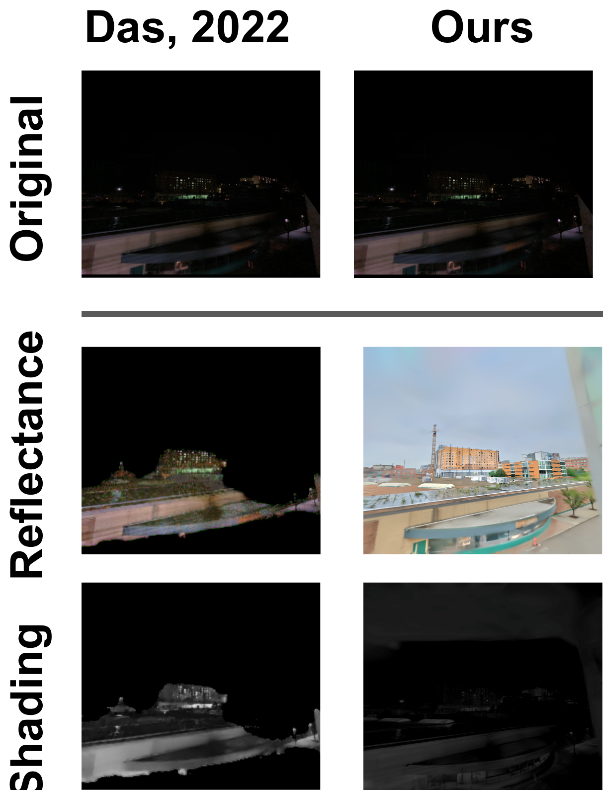

Time Splatting Results: Interpolation Across Seasons
Video 1:
Interpolation through seasons using Time Splatting on the Balcony 1 dataset successfully
disentangles seasons and progress of construction from time of day.
Video 2:
TODO: UPDATE WITH NEW METHOD. Time Splatting is able to disentangle construction progression
from lighting changes.
Video 3:
Interpolation through seasons using Time Splatting on the Balcony 2 dataset successfully
disentangles season from time of day.
Video 4:
Time Splatting is able to disentangle construction progression and season changes from lighting
changes.
Video 5:
Our method is able to reconstruct water and heavy foliage as well.
Video 6:
Our method is able to reconstruct water and heavy foliage as well.
Time of Day Interpolation
Reconstructions (Left) and Shading Images (right)
Video 7a:
Timelapse of the baseball field dataset from sunrise to sunset over one day.
Video 7b:
Shading component of the timelapse of the baseball field dataset from sunrise to sunset over one
day.
Video 8a:
Timelapse of the home garage dataset from sunrise to sunset over one day.
Video 8b:
Shading component of the timelapse of the home garage dataset from sunrise to sunset over one
day.
Video 9a:
Timelapse of the glass building dataset from sunrise to sunset over one day.
Video 9b:
Shading component of the timelapse of the glass building dataset from sunrise to sunset over one
day.
Video 10a:
Timelapse of the Balcony 1 dataset from sunrise to sunset over one day.
Video 10b:
Shading component of the timelapse of the Balcony 1 dataset from sunrise to sunset over one day.
Intrinsic Image Decomposition Comparisons

Image 5:
Comparison between Li et. al. 2018, Das et. al. 2022, and our method on intrinsic image decomposition.

Image 1:
Comparison between Li et. al. 2018 and our method on intrinsic image decomposition.

Image 2:
Comparison between Li et. al. 2018 and our method on intrinsic image decomposition.

Image 3:
Comparison between Li et. al. 2018 and our method on intrinsic image decomposition.

Image 4:
Comparison between Das et. al. 2022 and our method on intrinsic image decomposition.